플레이한 게임 PC, 콘솔, 모바일에서 만난 게임들의 기록.
게임 라이브러리 197편 검색
전체 197 RPG 52 MMORPG 9 액션·어드벤처 51 슈팅 30 생존·제작 26 공포 18 전략·디펜스 24 카드·보드 14 시뮬레이션 14 퍼즐·캐주얼 20 파티·협동 28 리듬 4 레이싱 3 MOBA 7 격투 1 방치형 3
전체 / 197개 게임
가디언 테일즈 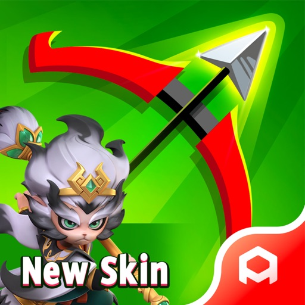
궁수의 전설 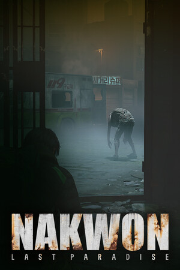
낙원: LAST PARADISE 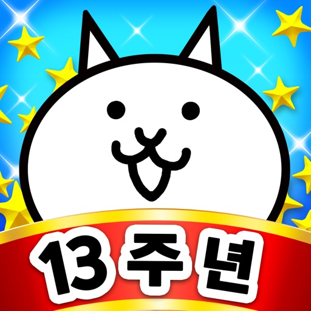
냥코 대전쟁 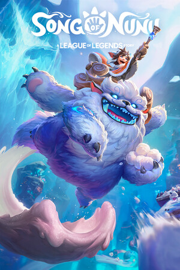
누누의 노래: 리그 오브 레전드 이야기 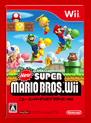
뉴 슈퍼 마리오브라더스 Wii 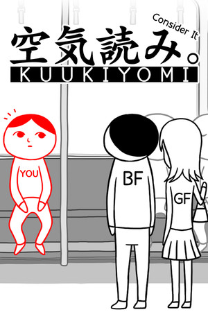
다함께 쿠키요미 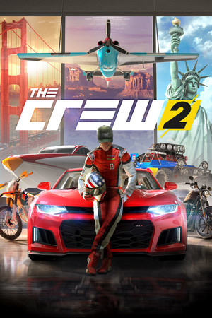
더 크루 2 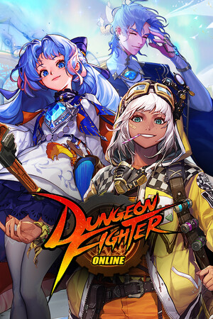
던전앤파이터 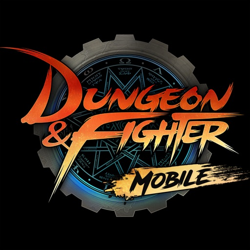
던전앤파이터 모바일 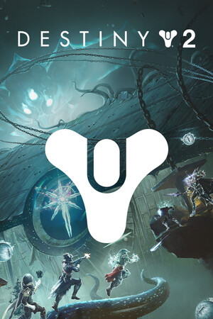
데스티니 가디언즈 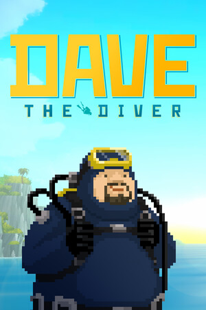
데이브 더 다이버 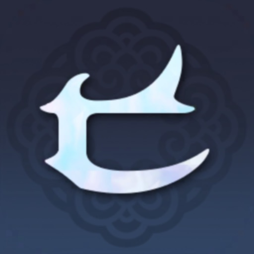
도깨비의세계 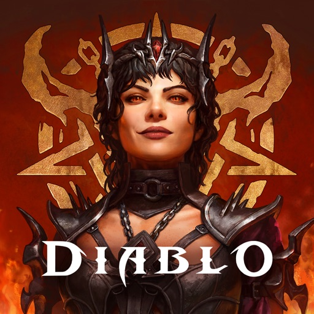
디아블로 이모탈 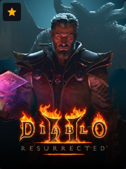
디아블로 II: 레저렉션 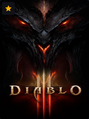
디아블로 III 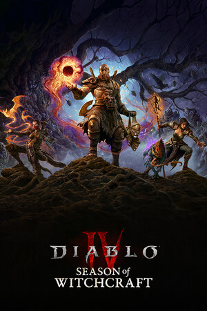
디아블로 IV 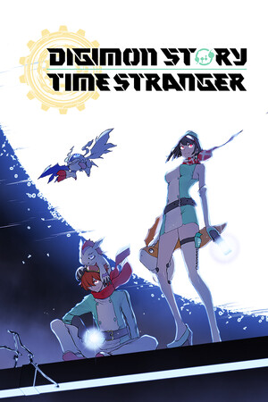
디지몬 스토리 타임 스트레인저 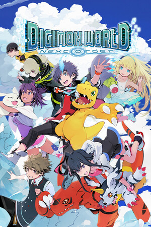
디지몬 월드 -next 0rder- 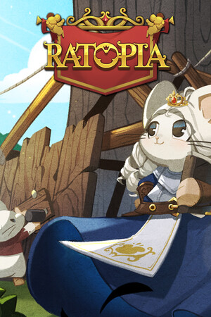
래토피아 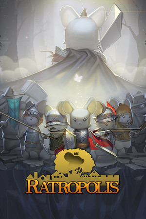
래트로폴리스 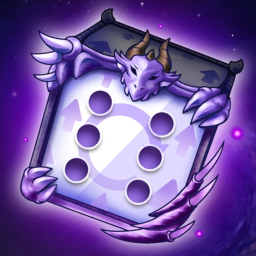
랜덤 다이스: 디펜스 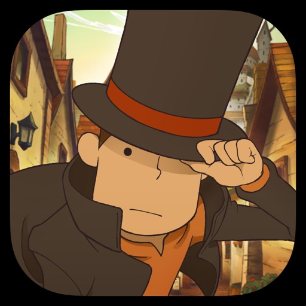
레이튼 교수와 이상한 마을 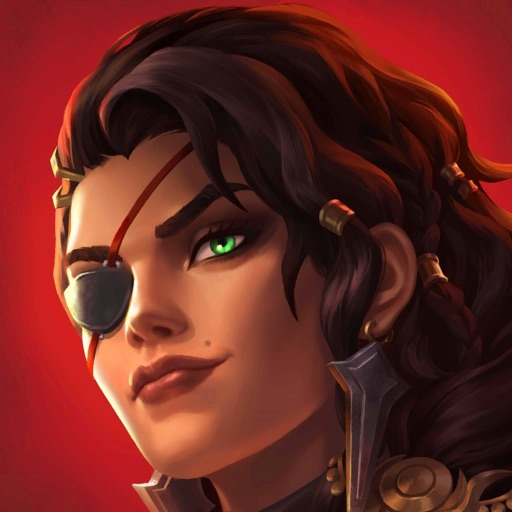
레전드 오브 룬테라 리그 오브 레전드 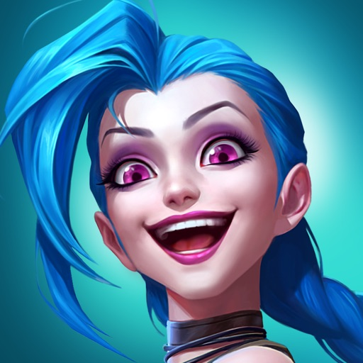
리그 오브 레전드: 와일드 리프트 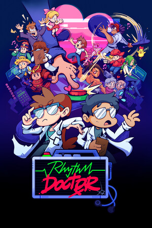
리듬 닥터 (Rhythm Doctor) 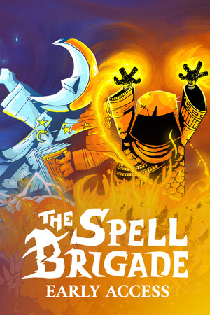
마법 주문 팀 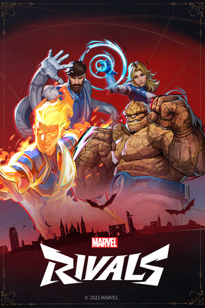
마블 라이벌즈 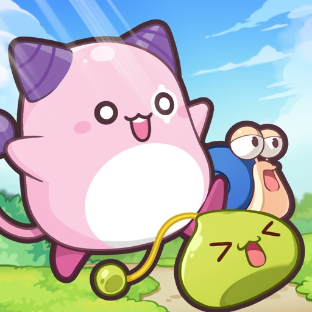
메이플 키우기 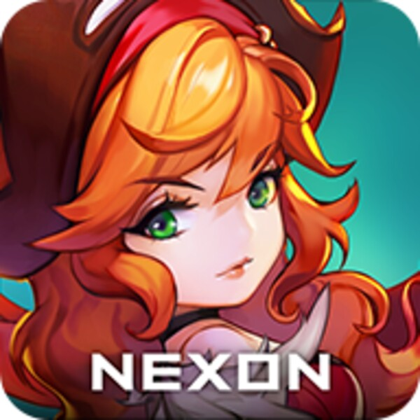
메이플블리츠X 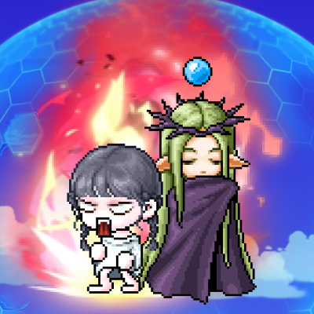
메이플스토리 메이플스토리M 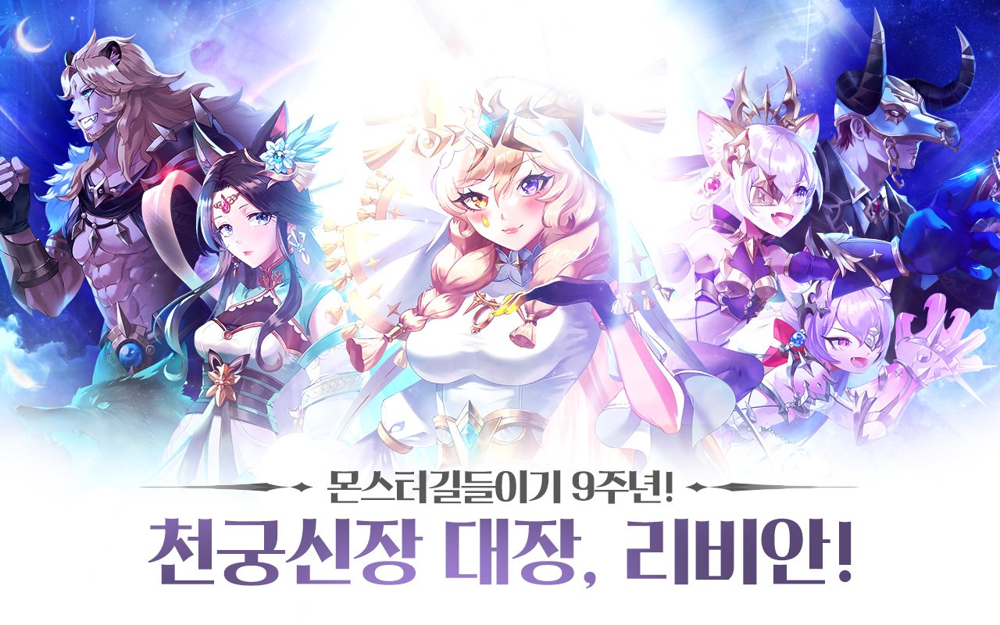
몬스터 길들이기 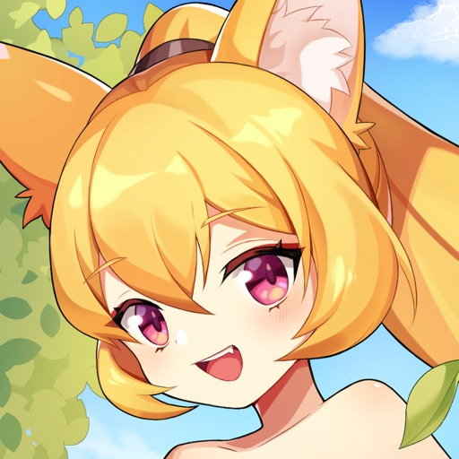
몬스터슈퍼리그 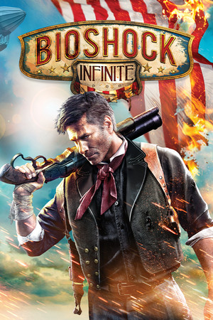
바이오쇼크 인피니트: 컴플리트 에디션 버블보블 4 프렌즈 스컬 몬스타의 역습! 불과 얼음의 춤 (A Dance of Fire and Ice) 서울 2033 세븐나이츠 슈퍼 마리오 3D 월드 슈퍼 마리오 파티 슈퍼 마리오 파티 잼버리 슈퍼 액션 히어로 리턴즈 스타크래프트 II 스타크래프트: 리마스터 아머드 코어 VI 루비콘의 화염 알비온 온라인 어쌔신 크리드 발할라 어쌔신 크리드 오디세이 어쌔신 크리드 오리진 어쌔신 크리드 III 리마스터 엘소드 오버워치 우리는 여기에 있었다 투게더 운빨존많겜 워크래프트 III: 리포지드 월드 오브 워크래프트 월드 오브 워크래프트 클래식 월드 오브 워크래프트: 포에버 이터널 리턴 전략적 팀 전투 제5인격 제노니아5 제우스: 오만의 신 젤다의 전설 브레스 오브 더 와일드 젤다의 전설 스카이워드 소드 카운터-스트라이크 온라인 쿠키런 쿠키런: 킹덤 크레이지레이싱 카트라이더 크루세이더 퀘스트 클래시 로얄 클래시 오브 클랜 클레르 옵스퀴르: 33 원정대 타이니팜 톰 클랜시의 레인보우식스 시즈 패스 오브 엑자일 2 펜타스톰 포켓몬 퀘스트 포켓몬스터바이올렛 포켓몬스터소드 프로스트펑크 하스스톤 호그와트 레거시 히어로즈 오브 더 스톰 7 Days to Die AFK 아레나 Among Us Angry Birds ARC Raiders ARK: Survival Evolved ARK: Survival Of The Fittest Backrooms: Escape Together [beta] Baldur’s Gate 3 Battlefield 6 Battlefield V Black Squad Bloons TD 6 Chained Together Content Warning Core Keeper Counter-Strike 2 Crypt of the NecroDancer Cyberpunk 2077 Dead by Daylight Dead Space Deceit Digimon Story Cyber Sleuth: Complete Edition Dispatch Don’t Starve Together Dota 2 Dungreed Escape from Duckov Escape the Backrooms Evolve Stage 2 Fall Guys Far Cry 3 Far Cry 5 Far Cry New Dawn Feign Forager Fortnite God of War Godus Goose Goose Duck Grand Theft Auto V GRIP: Combat Racing Hades Hades II Heave Ho Heroes & Generals Horizon Zero Dawn: Complete Edition Human Fall Flat Inside the Backrooms Kingdom Come: Deliverance II Kingdom Rush Kingdom Two Crowns Late Shift Lethal Company Liar’s Bar MARVEL SNAP MARVEL 퓨처파이트 MECCHA CHAMELEON Mindustry Minecraft Minecraft Dungeons Minion Masters Monster Hunter: World Muck Necesse: 네세스 No More Room in Hell Overcooked! 2 Palworld / 팰월드 PEAK Plague Inc. (전염병 주식회사) Planetary Annihilation: TITANS PlanetSide 2 Plants vs. Zombies Pokémon Champions Pokémon LEGENDS 아르세우스 Pokémon UNITE Poppy Playtime Project Zomboid PUBG: BATTLEGROUNDS R.E.P.O. Raft Ratatan Demo RV There Yet? Shattered Pixel Dungeon Ship of Fools Skul: The Hero Slayer Slay the Spire Sons Of The Forest Spellbreak Split Fiction Stacklands Stardew Valley Tap Titans TCG Card Shop Simulator TEKKEN 7 Terraria The Binding of Isaac: Rebirth THE FINALS The Forgotten City The Last of Us Remastered The Outlast Trials The Witcher 3: Wild Hunt (Remastered) This War of Mine Titanfall 2 tModLoader Tricky Towers UNCHARTED 4: 해적왕과 최후의 보물 VRChat Warframe Yu-Gi-Oh! Duel Links Yu-Gi-Oh! Master Duel 선택한 장르와 검색어에 해당하는 게임이 없습니다.